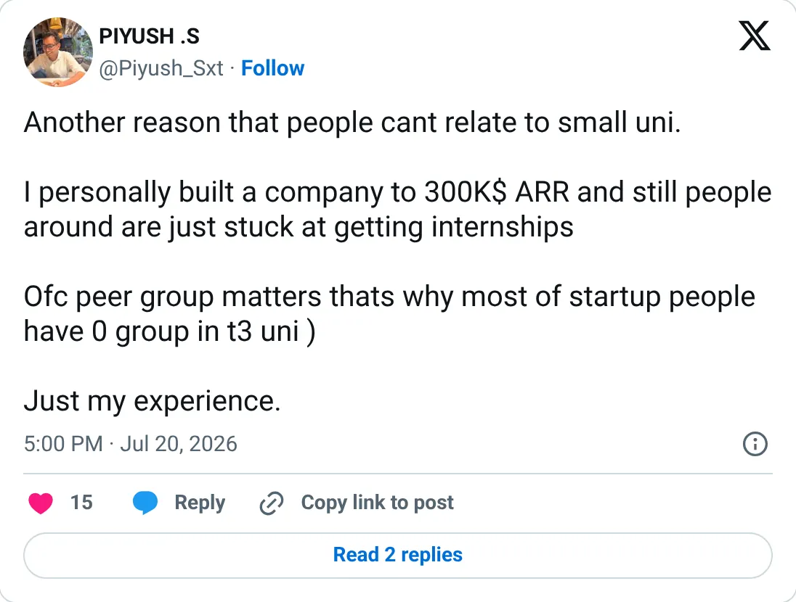

Don't build this
Draftly
The ledger looks real. It is not one of the clearer things to start next.
$21.6K MRR
Should you build this
Draftly generates a cinematic site from a prompt. The verified MRR is $21.6k and the months swing from $9k to $30k. In the same season the founder said he had built a company to $300k ARR and that revenue had doubled, while several summer months were falling. Generating the first screen is a demo. The business is hosting, edits, and distribution, and this trail doesn't show those.
Cited from the captured posts, shown below: the key post (Jul 20, 2026) is the source for “Founder: "I personally built a company to $300K ARR"”.
Posts this is based on

Founder: "I personally built a company to $300K ARR"
Open on X
What the product is
AI builder for cinematic 3D, immersive websites from a single prompt, from $25/mo. Tracking started in 2026. TrustMRR (Dodo Payments) shows $29.2K over the last 30 days.
⚠ Accelerator-backed: joined the Founders Inc (f.inc) cohort in 2026.
Public trail
- $18.8KVerified revenue in Mar 2026 (first month tracked) source
- $29KVerified revenue in Apr 2026 source
- $24KVerified revenue in May 2026 source
- •Founder: joined the Founders Inc (f.inc) cohort and has doubled revenue since source
- $17.1KVerified revenue in Jun 2026 source
- •Founder: "I personally built a company to $300K ARR" source
- $13.3KVerified revenue in Jul 2026 source
- $9.4KVerified revenue in Aug 2026 source
- $29.9KVerified revenue in Sep 2026 (latest full month) source